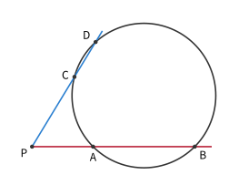

例題 1図形の性質 方べきの定理
円の外部の点 P から、この円に2本の割線を引く。1本は円と A、B で交わり（A が P に近い側）\(PA=3,\ AB=5\)、もう1本は C、D で交わる（C が P に近い側）。\(PC=4\) のとき、PD、CD の長さと、P から円に引いた接線の長さ PT を求めよ。

【答案（テストに書く形）】
\[PD=6,\quad CD=2,\quad PT=2\sqrt6\]答
円の外部の点 P から、この円に2本の割線を引く。1本は円と A、B で交わり（A が P に近い側）\(PA=3,\ AB=5\)、もう1本は C、D で交わる（C が P に近い側）。\(PC=4\) のとき、PD、CD の長さと、P から円に引いた接線の長さ PT を求めよ。

【答案（テストに書く形）】
\[PD=6,\quad CD=2,\quad PT=2\sqrt6\]答